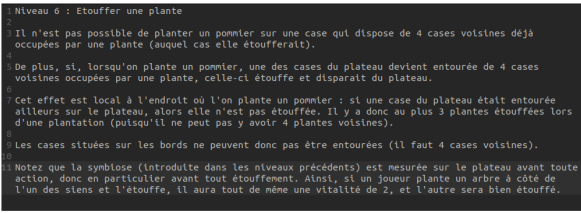

Compétences développées :
- Maniement des Tableaux 2D
- Maniement des chaînes de caractères
- Création d'algorithmes de prise de décision
- Utilisation de l'IDE Netbeans
Le projet Biosphère 7 s’est déroulé en deux phases. La première phase consiste à coder les actions possibles d’un jeu en fonction du niveau. En effet, il existe plusieurs variantes comme planter certaines espèces de plantes ou au contraire les couper et bien d’autres
La deuxième phase consistait à coder une IA qui peut jouer au jeu en fonction de toutes les actions possibles
